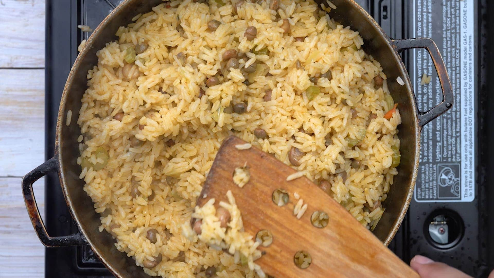

Moro de Guandules con Coco

Description
Moro de Guandules con Coco is a mix of rice, guandules and coconut milk that results in a delicious and buttery seasoned rice that is perfect for any special occasion.
Ingredients
- 2 tablespoons olive oil, divided
- 1 teaspoon chopped cilantro, (or parsley)
- ¼ cup chopped celery
- 1 teaspoon mashed garlic
- ¼ cup chopped cubanelle, (1 pepper, aprox)
- 1 oregano (dry, ground)
- 2 teaspoons salt
- 3 cup pigeon peas, (boiled or canned)
- ½ cup tomato sauce
- 2 cup coconut milk, or broth or water
- 4 cup rice, (medium grain, carolina, canilla)
Steps
- Heat 1 tablespoon of oil in a 1½ gallon [6 liters] iron pot and add the cilantro, celery, capers, garlic, olives, peppers, oregano, and salt. Cook and stir for a minute.
- Add the guandules, also while stirring.
- Once the vegetables are well heated, add 2 cups of water, tomato sauce, and coconut milk and bring to a boil.
- Stir in rice and simmer over medium heat, stirring regularly, and removing as much as you can of the rice that sticks to the bottom.
- When all the water has evaporated cover with a tight-fitting lid and simmer over very low heat. Wait 15 minutes, uncover, and stir in the remaining oil. Move the rice from the bottom to the top so it cooks uniformly. Cover again and simmer another 5 minutes.
- Uncover and taste. The rice should be firm but tender inside. If necessary, cover and leave another 5 minutes on very low heat.
- Remove from the heat and serve